Font Maker — Illustrated User Guide
Version 0.3.56 · For the nanpa-linja-n sitelen pona Font Maker · Works offline when included in the deployed site.
This is the complete guide to the visible controls. The screenshots are schematic illustrations based on the current controls, not photographs of a particular saved glyph. Purple indicates selected/editable controls; black indicates final glyph ink; pale grey indicates a reference or alignment guide.
Quick answers — FAQ
Start here for common problems. Each answer gives the quick action first, followed by a link to the illustrated instructions. The drawings show the actual meaning of the purple controls, not an invented extra tool.
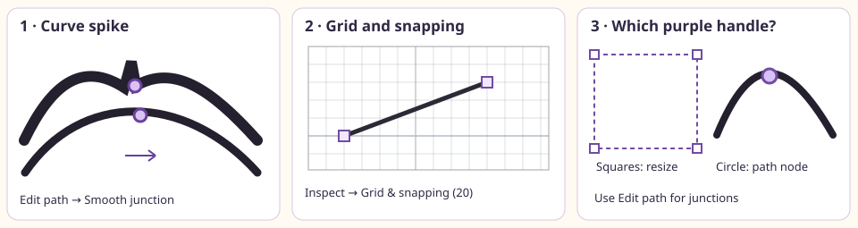
| I want to… / I see… | Quick answer | Illustrated details |
|---|---|---|
| Remove a little spike where two curves meet | Choose ⌁ Edit path, click the round purple junction, then Paths → Smooth junction. Adjust the two small tangent handles if necessary. This is usually a kink, not a tiny backtracking spike. | Curve join and spike walkthrough |
| Select the join but keep getting a purple rectangle | You're using ▣ Select, which selects/resizes the entire shape. Switch to ⌁ Edit path and select the actual interior junction. | Recognise selection vs. path handles · Paths |
| Join two lines or curves into one path | Start the next Line/Curve at the highlighted open endpoint. For two existing paths, select their endpoints and choose Join endpoints or Join smoothly. | Connect and edit paths |
| Draw a circle from its centre rather than a corner | Normally drag from a corner; hold Alt/Option to start at the centre. On Linux, if Alt-drag moves your window, tick Brush → Draw shapes from centre instead. Hold Shift for a perfect circle (or square). | Corner/centre shape diagram · Brush setting |
| Use the same brush width for the whole font | Choose Brush → Width and Smooth once. They are remembered per project, including after switching glyphs or reopening the project. Existing drawings are not resized automatically. | Brush defaults and what they affect |
| Make a straight line end square or flat | Open Brush → Line / Curve end caps and choose Flat (ends exactly at the anchor) or Square (projects half a width past the anchor). Draw a new Line or Curve. | Visual comparison of cap styles |
| Use a square Pencil or Eraser | Open Brush → Pencil / Eraser tip, choose Square, then draw or erase. This changes the complete brush footprint, not merely the ends. | Round versus square tips |
| Remember Brush options when switching glyphs or projects | Brush settings belong to each project: set them once; the same values return on the next glyph, after reopening, or after exporting/importing the project JSON. | Project-wide drawing preferences |
| Make the grid visible / change the cell size | Tick Grid above the canvas. Open Inspect → Grid & snapping and enter a spacing, normally 20 editor units. | Grid diagram and settings |
| Make a line or anchor follow the grid | Open Inspect → Grid & snapping, enable Snap to grid. You may hide grid lines while snapping. Freehand Pencil/Eraser deliberately do not snap. | What snaps and what doesn't |
| Erase everything inside a selected area | Use ▣ Select or ◌ Lasso to select the area, then choose ◫ Eraser or press E. The selection stays active; Undo restores the ink. | Selection and erasing |
| Erase the pale-grey original glyph | The grey silhouette is a protected reference. Use Inspect → Show original filled silhouette to hide it; copy or restore the glyph if you need editable ink. | Imported reference controls |
| Fill a shape or cut a transparent hole | Fill operates inside a bounded region. For a transparent vector hole, draw a closed inner Bézier contour and set its role to Hole, or use a Cut layer. | Bézier paths · Layer types |
| Remove a detected tiny loop or crossing | Open Paths → Inspect & repair outlines, run Check outline, select the reported issue and use the matching repair. Use Undo if the result is unsuitable. | Repair diagram and cautions |
| Make a curved stroke smoother | For a joined kink use Smooth junction. For bumpy freehand ink, adjust Brush → Smooth or select artwork and choose Smooth outline. | Junction smoothing · Brush smoothing |
| Stop editing or moving the wrong layer | Open Layers, click the layer you intend to edit, and check its lock, eye, and export switches. Keep a simple single layer until you need more. | Layers illustration |
| Reuse a glyph and update copies automatically | Open Layers → Linked components (advanced) and link to the source glyph. Transform the link independently without changing the source. | Linked components |
| Preview my newly edited font | In Preview, choose Build preview fonts; subsequent text changes reuse the built pair. Geometry changes may require rebuilding. | Preview, test strings and geometry |
| Adjust cartouche spacing, rails or tallies | In Preview, use the existing Rails & spacing, Cartouche ends, Pi & long-pi, Tallies, or Alignment tabs. Their settings apply when the font pair is rebuilt. | Illustrated Preview settings |
| Adjust the width or kerning of a glyph | Open Metrics & kerning. Select a glyph or pair and watch the live diagrams while changing the numbers. Click Save spacing or Save pair; Build font proof verifies the compiled TTF. | Typography controls |
| Save work to another computer | Use Save project file to preserve editable artwork. Export fonts ZIP is for installed TTFs; Use on this site only installs fonts in this browser. | Projects and exports · Portable fonts |
| Find why export is failing | Open Build & export → Font quality checks, run Check project, follow any glyph links, then rerun the build. Compiler/test failures are not fixed by changing grid settings. | Validation and build troubleshooting · Troubleshooting |
Where is the button? FAQ is immediately before ⓘ Help in the drawing toolbar. Both open this local guide in a separate tab; FAQ jumps here, while Help starts at the overview. Each movable palette's ? still opens its own detailed section.
1. Getting started and finding your way around
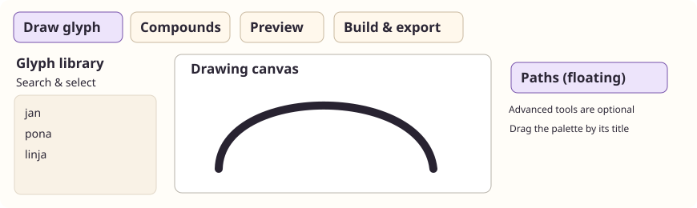
- Draw glyph is where you make and edit individual shapes. The glyph catalogue is on the left, the canvas is central, and optional floating palettes overlay it only while open.
- Compounds combines glyphs into an override without altering their sources.
- Metrics & kerning edits advance widths, left side bearings, glyph-pair spacing and optional kerning classes, with immediate schematic diagrams.
- Preview shapes test strings using the two compiled font faces and changes cartouche/long-pi geometry.
- Build & export gives the font its identity, validates it and exports the font pair.
- FAQ (immediately beside Inspect) opens quick solutions. ⓘ Help beside it opens this complete guide. The ? in a floating palette jumps to its relevant illustrated section.
Basic workflow: select jan or another glyph from the left → choose Pencil → draw on white canvas → optionally edit with Select or Curve → open Preview and click Build preview fonts → use Build & export → Export fonts ZIP.
Project and file buttons (at the top)
| Control | What it does | Important detail |
|---|---|---|
| Active project | Select another local project | The current editor saves to IndexedDB when available. |
| + New | Create a separate editable project | Does not overwrite existing named projects. |
| Delete project | Remove the selected saved project | Confirm the destructive action. |
| Open project | Import a previously exported editable JSON project | Different from installing a compiled font ZIP. |
| Import font | Start a project using an existing TTF/OTF | You must provide and acknowledge the imported font's licence. |
| Import ZIP | Restore a compatible exported editable project/font ZIP | The verified ZIP carries its licence manifest. |
| Save project file | Download editable JSON | Use this for backups and moving editable work between computers. |
Glyph library
Find a glyph searches name/aliases. Glyph category filters sitelen pona, printable ASCII, custom slots or special controls. All / Drawn / Missing filters by editing status. Click a glyph pill to work on that glyph; the thumbnail reflects saved editable artwork. The grey source guide is not your new drawing.
2. Drawing tools and the canvas
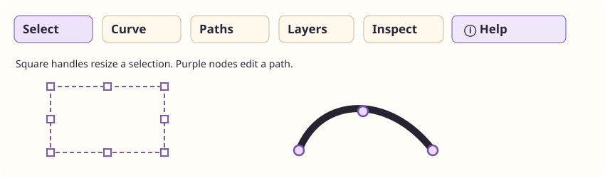
The toolbar uses short glyph icons to save canvas space. Hover or focus a tool to read its full name. The purple-highlighted icon indicates the active tool.
| Tool | Gesture / result | Good for |
|---|---|---|
| ▣ Select | Click a vector object or drag empty space to marquee-select; resize with square handles | Moving, copying, scaling or erasing a chosen area |
| ◌ Lasso | Trace an irregular boundary around artwork | Selecting part of a complex shape |
| ✎ Pencil | Press and drag freehand | Rough drawing; smoothing is optional |
| ◫ Eraser | Drag to erase; with a Select/Lasso region already active, choosing Eraser erases that region immediately | Removing editable ink, not the grey source guide |
| ╱ Line | Drag a straight segment; begin on a highlighted endpoint to continue a path | Straight edges and connected outlines |
| ◯ Circle | Drag from a corner for an ellipse; Shift makes a circle; Alt/Option draws outward from the centre | Rounded shapes and holes |
| ▢ Rectangle | Drag from a corner; Shift makes a square; Alt/Option draws outward from the centre | Block forms |
| ⌒ Curve | Drag endpoints, then drag or click the purple bend control; can start at an existing endpoint | Rounded strokes, arches and joining paths |
| ▰ Fill | Click a bounded region, or select an area first and choose Fill | Filling closed editable regions |
| ⌁ Edit path | Click anchors, drag tangent handles, add Bézier nodes and edit contours | Precise outline correction |
| ✥ Pan | Drag to move the view without drawing; Space+drag also pans | Navigating a zoomed canvas |
Zoom: mouse wheel (over canvas), +, −, and Fit in the canvas header. Zoom and pan change only the view, never the stored outline. Metrics shows the font baseline and, for special slots, joining-rail guides. Original glyph reference in Inspect controls the pale grey source silhouette.
Circle and Rectangle: drag from a corner or from the centre
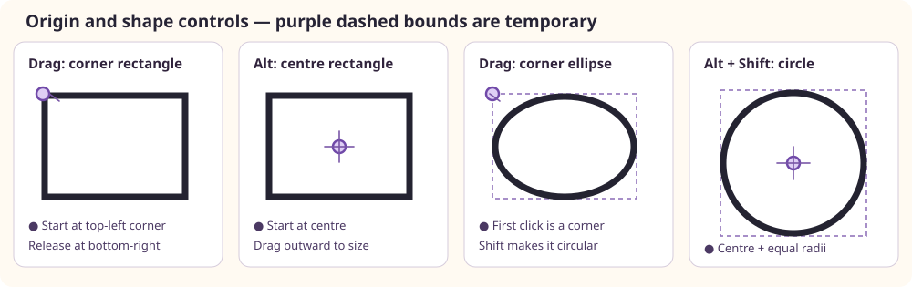
By default, the first click is one corner of the shape's bounding box. Drag to its opposite corner. While dragging, a thin purple dashed box shows the bounds; that guide disappears when you release the pointer and is not exported into the font. For the Circle tool, unequal width/height makes an ellipse; for Rectangle, an ordinary rectangle.
| Gesture | Circle tool | Rectangle tool |
|---|---|---|
| Drag | Ellipse, first point at a corner | Rectangle, first point at a corner |
| Shift + drag | Perfect circle | Square |
| Alt/Option + drag | Ellipse, first point at its centre | Rectangle, first point at its centre |
| Shift + Alt/Option + drag | Circle from the centre | Square from the centre |
Linux alternative: Some Linux window managers move the whole window when you Alt-drag. Open Brush → Draw shapes from centre (checkbox) to use centre-origin drawing without Alt. With that box checked, Alt/Option temporarily switches back to corner-origin drawing. The last saved preference is restored whenever you reopen the project. Alt/Option on Mac is the ⌥ Option key. The centre-origin option affects only new Circle/Rectangle shapes; it never repositions existing ones.
Tip: Use Shift to maintain equal width and height; use Snap to grid independently for consistent anchor placement. Only Pencil, Eraser and Lasso remain freehand.
What the purple squares mean
Eight squares surrounding a rectangle are selection resize handles. A small purple circle at the bend or junction of an existing path is an editable node. These are different features. Select Edit path when you want to change an actual Bézier anchor rather than resize the whole shape.
3. Visible grid, spacing and snapping
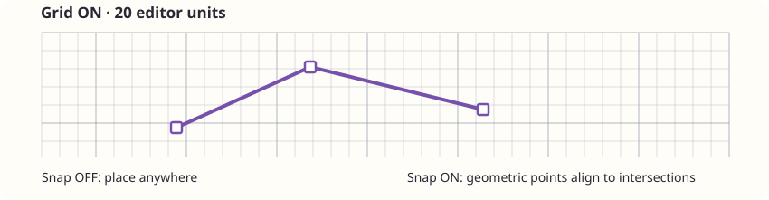
The checked Grid box now draws real horizontal and vertical lines on the white artboard. It no longer just changes the surrounding striped area.
| Setting | Location | Initial value | Effect |
|---|---|---|---|
| Grid | Drawing canvas header | On | Shows/hides pale grey grid lines behind editable ink and purple handles. |
| Grid spacing (editor units) | Inspect → Grid & snapping | 20 | Distance between adjacent grid lines in artboard drawing coordinates. Choose 5–100 in steps of 5. |
| Snap to grid | Inspect → Grid & snapping | Off | Snaps new Line/Curve/Rectangle/Circle points, new Bézier anchors and dragged editable anchors to nearest grid intersections. |
| Metrics | Drawing canvas header | On | Shows the baseline and relevant cartouche/long-pi joining guides; independent of the grid. |
Every fifth line is slightly darker, so with 20-unit spacing the stronger lines occur every 100 units. Increasing spacing makes fewer, larger cells. Decreasing spacing makes a finer grid. The grid moves and scales together with the artboard under zoom/pan.
Independent controls: Grid OFF + Snap ON is allowed, as is Grid ON + Snap OFF. The cursor and existing shape hit testing remain free-positioned so nearby anchor handles still work. Pencil, Eraser, Lasso, Select and Pan are never grid-snapped. Bézier tangent handles and bend controls remain free, so you can adjust curvature smoothly between grid points. Grid settings are remembered in this browser and are not included in exported glyphs or TTFs.
Try this: choose 20 units → enable Snap → draw a Line from near one grid intersection to another. It starts and ends exactly on the nearest intersections. Disable Snap to draw unconstrained curves again.
4. Brush palette — stroke, smoothing and fill choices
Open the floating Brush palette from its toolbar button. Move it by dragging its heading; × Hide closes it without shrinking the canvas; ? opens this section.
| Setting | What to expect |
|---|---|
| Width | Default 9 editor units, saved for the current project and reused across glyphs and sessions. Controls Pencil, Eraser, Line, connected strokes and outlined shapes. Changing Width while artwork is selected can also resize that selection. |
| Smooth | Default 55%, saved per project. Sets Pencil smoothing (0–100%); increasing it removes more hand jitter without changing previously drawn glyphs. |
| Smooth outline | Processes existing editable artwork; if Select/Lasso is active, targets only that region and protects its border. Undo reverses it. |
| Auto-straighten / circle | Recognises suitable freehand Pencil strokes and replaces them with editable geometric shapes. |
| Solid shape | When checked, new Circle/Rectangle shapes are filled rather than just outlined. |
| Draw shapes from centre | Off by default: drag from a corner. Check to make Circle and Rectangle start at their centre (Linux-friendly alternative to Alt/Option-drag). Alt/Option temporarily toggles the choice. |
| Line / Curve end caps | Round by default. Flat terminates the outline at the endpoint; Square adds half the stroke width beyond it. Saved on each new editable Line/Curve path, so changing the control later will not restyle previously drawn strokes. |
| Pencil / Eraser tip | Round by default. Choose Square for a square-shaped stamp swept along the whole freehand stroke. This applies to the raster drawing and the editable vector eraser footprint. |
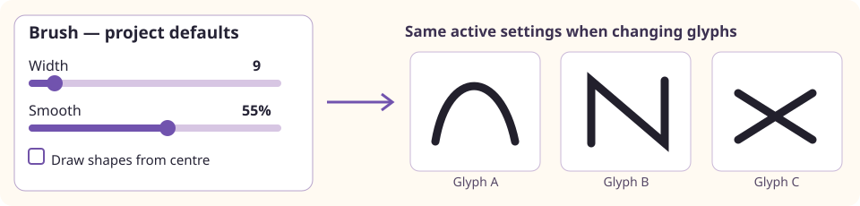
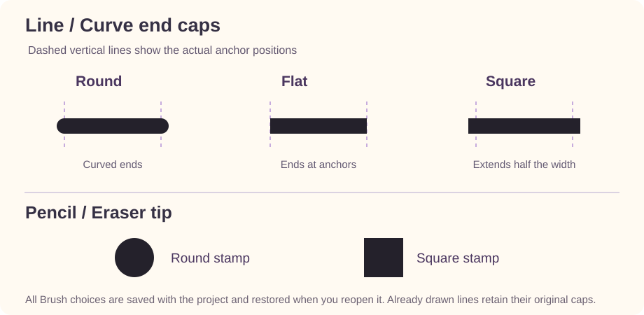
Consistency across the font: The current Width, Smooth, Auto-straighten, Solid shape, Draw shapes from centre, Line / Curve end caps and Pencil / Eraser tip belong to the project, not to a particular glyph. Set them once, switch to another glyph and keep drawing at the same width. They are autosaved with the project and included when you export/import its editable JSON. Switching to a different project restores that project's own preferences. Existing strokes and contours keep the geometry they were drawn with; a global width or cap preference change is not a destructive restyling command. Smooth outline is a command that edits selected artwork, not a persistent Brush option. A Line/Curve that you extend keeps its original cap style for that connected path.
A useful sequence is Pencil → Smooth at a moderate value → select an uneven area → Smooth outline. Avoid repeatedly smoothing already-clean shapes because each pass can soften useful corners.
5. Edit palette — selections, transforms, history
Use Select for a rectangular marquee or to click an individual vector object; use Lasso for a freehand region. Drag inside the selection to move, or drag its perimeter squares to resize. Corner handles preserve proportions unless Shift is held; side handles adjust one dimension.
| Control | Action |
|---|---|
| Select all | Select editable artwork on the current layer. |
| Copy / Cut / Paste | Move reusable artwork between glyphs/projects; Cut also removes it from the source selection. |
| Duplicate | Add a copy without leaving the current glyph. |
| Rotate left/right 90° | Rotate the selected artwork by a quarter-turn. |
| Rotate ° / Apply rotation | Enter a custom angle, then apply. |
| Scale % / Apply scale | Set a scale percentage and apply it to selection. |
| Flip H / Flip V | Mirror selected artwork horizontally/vertically. |
| Crop | Retain only the selected area in editable raster art without changing glyph metrics. |
| Delete | Remove selected artwork. |
| Deselect | Clear selection handles and return to ordinary drawing. |
| Copy glyph / Paste into glyph / Replace glyph | Work with an entire glyph; Replace asks before overwriting. |
| Undo / Redo | Reverse/restore editable actions, including selected erasing and successful repairs. |
| Clear glyph | Removes the current active editable drawing after confirmation. |
Selected Eraser and Fill: first draw a Select/Lasso region. Click Eraser to clear inside that region, or Fill to add ink there. The selection stays active so you can adjust or Undo. The imported grey silhouette is only a guide and is not erased. Locked layers cannot be edited.
6. Paths palette — editable curves and joins
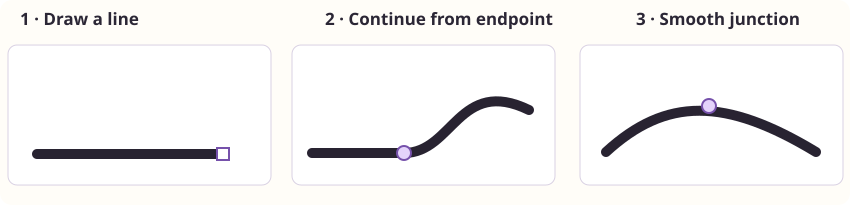
A line and a curve can share a node and become one editable path. Start a new Line or Curve close to a highlighted open endpoint to extend that path. Switch between Line and Curve without losing the connection.
Recognising path controls: square nodes at open ends can extend a path; circular nodes at an interior junction can be selected, dragged and smoothed; small tangent handles change the angle/curvature of Bézier segments. A purple bend handle changes a Curve tool's arc without moving its endpoints.
| Control | What to do |
|---|---|
| Join endpoints | Select one endpoint using Edit path, Shift-click another, then use Join endpoints. |
| Join smoothly | Connect the endpoints and align the curve direction. |
| Smooth junction | Select an interior node and align incoming/outgoing tangents to remove a kink. |
| Close path | Join first/last points of one open path into a closed contour. |
| Close outline / Close hole | Finish a Bézier contour as solid ink or transparent cutout. |
| Cancel contour | Discard the unfinished Bézier contour. |
| Outline picker / Selected contour | Select a finished path, then choose Filled (black) or Hole (transparent). |
| Preview filled glyph | Hide editing nodes and inspect the black silhouette. |
Inside Edit nodes (collapsed): advanced insertion/deletion/splitting, point type adjustment and extrema generation. Inside Combine shapes (collapsed): Union, Subtract, Intersect, Exclude. These operate on editable closed vector outlines; Undo restores the originals. Advanced operations do not need to be open for everyday drawing.
How to fix a spike in a curve
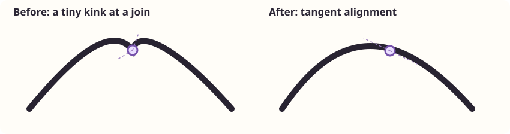
- Select Edit path (⌁), not Select (▣).
- Click the curve and then click the purple interior junction where two sections meet.
- In Paths, use Smooth junction (near the top of that palette).
- If the curve still needs adjusting, drag its smaller tangent handles individually.
- Use Undo if the modification is not right.
Why not begin with “Trim tiny spike”? That command removes a short backtracking segment in an outline. A kink between joined curves is normally a tangent alignment problem, and smoothing the junction is preferable because it keeps the path intact.
7. Paths → Inspect & repair outlines (advanced)
This panel is closed by default. These commands are for geometry problems; they do not repair ordinary freehand inaccuracies and are not required to export every glyph.
| Button | Purpose and caution |
|---|---|
| Check outline | Scan for duplicates, intersecting contours, tiny spikes, small Bézier loops and invalid holes. Does not change artwork. |
| Safe cleanup | Conservative cleanup of duplicate/zero-length points and winding where safe. |
| Trim tiny spike | Remove a short backtracking vector spike. Not for an ordinary tangent kink. |
| Trim tiny Bézier loop… | Remove a small detected loop on a curve after selecting the reported issue. |
| Remove overlaps… | Resolve overlaps using vector boolean processing; confirm the change. |
| Resolve crossing… | Attempt to regularise a self-crossing outline; inspect result and Undo if needed. |
Use Check outline → click the finding → choose the matching repair. Repair reports are not proof of perfectly valid font geometry; the Build & export quality checks provide another gate. Edits affect the active editable layer, and risky operations require explicit confirmation.
8. Layers palette — independent drawings and live components
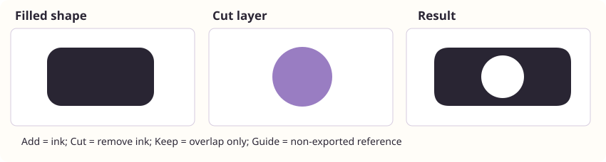
Open Layers for your current glyph. The list includes editable layers and a protected imported/Fairfax reference base. Click a layer to edit it. Double-click its label to rename. Reorder layers to change composition; eye controls visibility, lock prevents editing, and the export checkbox controls whether geometry contributes to TTF output.
| Layer type | Meaning | Example |
|---|---|---|
| Add | Add this layer's solid geometry | Main body of jan |
| Cut (Subtract) | Remove this layer's shape from the accumulated shape | A transparent centre/hole |
| Keep (Intersect) | Retain only shared filled areas | Clip a fill within another outline |
| Guide | Show reference artwork in the editor but not in export | Sketch or construction guide |
+ Layer / Duplicate / Delete manage editable layers. Linked components (advanced) lets a layer refer to another glyph's live outline, with independent position/scale/rotation. Changes to the source glyph can flow into dependent glyphs. Circular links are rejected. Clipping & shape modifiers (advanced) includes reversible layer composition, live boolean operands and clip boundaries. Isolate layer hides other editable layers for your view only; it does not change font export.
Good habit: keep the simple draw-on-one-layer workflow until a second layer genuinely helps. Complex layer effects are optional; they do not change Pencil/Curve tools.
9. Inspect palette — grid, glyph data and the original outline
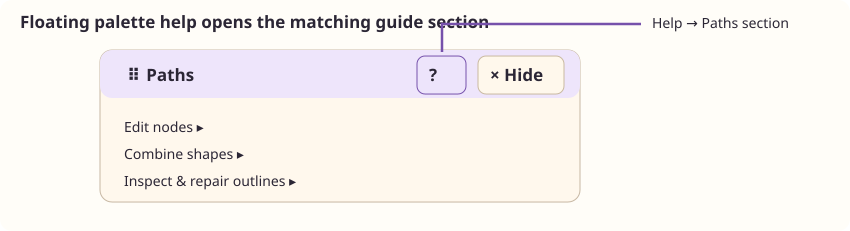
At the top of Inspect, Grid & snapping is a small collapsed section. It contains Grid spacing (default 20 editor units) and Snap to grid (off by default). The visibility checkbox itself stays in the drawing canvas header. See the illustrated grid explanation.
The remaining Inspector sections are:
| Control | Meaning |
|---|---|
| Word / slot name | Identifies current glyph (from the fixed catalogue). |
| Unicode assignment | Shows the fixed Unicode/UCSUR value; read-only. |
| Additional input aliases | Alternative text names for this glyph. Click Apply metadata to save. |
| Vector trace | Preview of bitmap traced into SVG. |
| Opacity threshold | Determines which pixels count as solid in tracing. |
| Outline simplification | Controls path simplification of the traced raster outline. |
| Export this glyph as SVG | Download this individual glyph's vector output. |
| Show original filled silhouette | Show/hide non-editable grey source art. |
| Reference opacity | Set grey guide transparency (independent of glyph ink). |
| Joining-stroke alignment | For special cartouche/long-pi slots only, inspect/confirm attachment geometry. |
| Restore selected glyph from font | Recover imported source art into the editable glyph. |
The grey source silhouette, grid and Metrics baseline are all separate visual layers, not font ink. Hiding them does not delete a glyph; using Eraser on the grey reference does not remove it.
10. Compounds tab — combining source glyphs
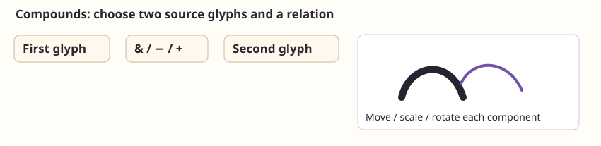
Choose First glyph, Operator and Second glyph. The operators are & (generic/font-defined compound), − (stacking) and + (nesting/scaling). Click Create / edit override to edit that specific combination. The two source glyphs are not overwritten.
In the preview, click a component and drag to move it. Set Horizontal offset, Vertical offset, Scale and Rotation (degrees) in the right-hand controls; Reset component transform restores its default placement. Defined overrides lets you revisit a saved compound; Remove override discards that combination's custom layout.
If a component is only an imported reference outline rather than editable geometry, follow the instruction in the Compounds panel to copy/draw its source first before export.
11. Preview — see the actual compiled font pair
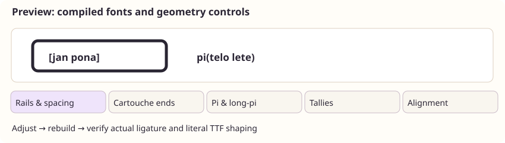
Show font: Both fonts, Ligatures only or Literal only. Font size: display size in pixels. Build preview fonts: compile the pair for preview. Test text: enter examples and compare the actual output.
Try:
toki pona [jan pona]
["ABC"]
[nanpa½ :½ wan]
[jan,, telo,,]
pi(telo lete) pi jan
The Ligatures TTF shapes sitelen pona ligatures and native cartouche controls. The Literal TTF is for literal ASCII/quoted content. The Preview tab is a font-shaping test; it is not a substitute for a website's separate Toki Pona date/time parser.
Rails & spacing
| Setting | What it changes |
|---|---|
| Cartouche glyph spacing | Extra spacing between adjacent cartouche glyphs. In this version its slider starts at zero; negative compression is not implemented. |
| Top rail / Bottom rail | Vertical placement of top and bottom cartouche rules. |
| Rail thickness | Shared horizontal rule stroke weight. |
| Start/end padding | Extra space at the left and right ends; minimum currently zero. |
| Content X offset | Shifts cartouche contents horizontally without shifting its rails. |
Cartouche ends
End shape adjusts the cap curvature/height. End curve Y offsets the rounded curvature vertically. Left cap stroke / Right cap stroke control each cap independently. Left X / Right X adjust each cap horizontally. The cap-to-rail joins are maintained by the compiler.
Pi & long-pi
Pi height, Pi Y, Pi X control long-pi start geometry. Pi stroke controls ordinary pi; Long-pi stroke separately controls extended pi(...). Round Pi tips rounds eligible exposed tips while keeping attachment widths.
Tallies
Tally length, Tally Y, and Tally spacing affect the small marks beneath cartouche glyphs. Use the preview strings containing ,, to compare stroke placement before export.
Alignment
Fraction % controls fractional glyph vertical alignment; Baseline and Centre provide quick presets. Top padding / Bottom padding reserve clearance outside rails and tallies to prevent font clipping. The clearance gauge visualises the reserved space.
Changes to font geometry cause the compiled preview pair to rebuild after a brief pause. If you are testing final output, confirm the last build completed before exporting.
12. Metrics & kerning — editing font spacing
Open the Metrics & kerning tab beside Draw glyph, Compounds and Preview. This is an editing operation, not an export-only option. Select a glyph in the left-hand library, then open the tab to load that glyph's spacing settings; Use selected glyph also synchronises the choice.
Live glyph metrics diagram: Set Advance width (the horizontal progression to the next glyph) and Left bearing (clearance before the actual ink). The diagram updates immediately while you type; Save spacing persists the override, and Use original removes it. Blank input fields keep the native metric from the imported/template font. There is no independent editable right-bearing field because the right bearing depends on advance, left bearing and actual outline width.
Live pair spacing diagram: Choose First glyph, Following glyph and a signed Adjustment. Negative values bring the glyphs closer; positive values move them apart. The diagram changes immediately as you type, and Save pair records the adjustment. Remove pair clears it. Kerning classes (advanced) lets you define reusable classes; explicit pair adjustments override class rules.
Cartouches and long-pi (Ligatures font): Pair and class kerning also applies to corresponding contextual content glyphs in [...] cartouches and pi(...) long-pi constructions. Negative kerning uses GPOS positioning. Positive kerning builds real connecting rail geometry to cover the extra width: for adjacent content (such as [aa] or pi(aa)) a contextual content variant receives an extended rail; with one Fairfax space separator (such as [a a] or pi(a a)) the separator is substituted with a rail-bearing spacer. Repeated pairs inside longer constructions are handled. Unlike spacing-only adjustments, this preserves continuous cartouche top/bottom rails and long-pi lower strokes. Individual pair rules and kerning classes use the same mechanism. The compiler supports up to 128 distinct positive pairs with contextual variants per export; excess rules produce an explicit export error instead of a broken font. Structural end caps, unboxed glyph outlines and the Literal font's ASCII behaviour remain separate. The live diagrams remain schematic; use Build font proof to inspect the actual shaped output.
Fractions and kerning: When the second glyph has a fractional suffix, kerning changes only the space before it: neither the fraction itself nor its scaling is altered. For negative kerning, the compiler measures the non-rail ink extents and limits excessive compression to preserve a 40-unit visual clearance. Fractional glyphs may therefore receive a smaller negative spacing adjustment than full-sized glyphs, without changing their shapes or widths. The connector adapts to each supported vulgar suffix (¼, ⅓, ½, ⅔, ¾) and the equivalent ASCII suffixes (1/4, 1/3, 1/2, 2/3, 3/4) in both adjacent and space-separated cartouches and long-pi. The compiler matches the actual GSUB fractional variants, including ASCII fractions that expand into multiple shaping glyphs. The live diagram remains schematic; Build font proof shows the authoritative shaped result. Fractional suffixes on the first glyph, tally combinations and other complex intermediary sequences are not covered by this contextual connector guarantee and should be independently verified.
Diagram limitation: The drawings are intentionally schematic, not measured glyph outlines. A blank advance or bearing is shown using a labelled example value because the browser-side controls do not read the native horizontal metrics directly from the source TTF. The pair diagram likewise illustrates the spacing shift, not a fully shaped font run. These immediate diagrams are not confirmation of final font geometry, ligatures or GPOS behaviour. Click Build font proof after saving changes to compile the actual Rust/WASM-generated TTF and inspect its OpenType positioning. Structural spacing/cartouche slots remain protected.
13. Build & export — names, validation and portable files
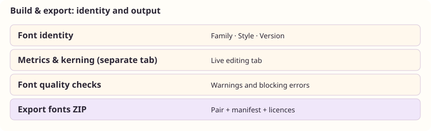
Font identity
Font family, Style, Version and PostScript base name are written to the OpenType name table. User project ID identifies the portable project and is distinct from the browser's private IndexedDB key. Click Save font identity after changing names.
Editable files and font ZIPs
| Button | Result |
|---|---|
| Export editable project JSON | Project backup with editable outlines/settings for future work. |
| Export vector SVG assets ZIP | Individual vector glyph assets. |
| Export custom-name Unicode manifest | Custom name/codepoint mapping for compatible website parsers. |
| Export fonts ZIP | Compiles both TTFs and packages a verified manifest, licences and quality report. |
| Use on this site | Saves the compiled font pair in this browser for other pages of this website. |
| Import font ZIP | Installs a previously exported compiled pair in this browser. |
Advanced font settings → Rasterization profile can select Default, Grayscale without grid-fitting, or Grayscale with grid-fitting. This affects generated-font display hints; it does not toggle the visible drawing grid.
Font quality checks (optional)
Click Check project to inspect outline and dependency findings. Problems are reported with glyph references; inspection does not alter drawings. Compilation also checks the output TTF structures and browser font loading. The ZIP includes quality-report.json describing the checks performed. External Rust, fontTools, HarfBuzz and LibreOffice checks are additional release gates; a browser's quality report is not a blanket certification.
14. Handy gestures and troubleshooting
| Gesture | Effect / reminder |
|---|---|
| Space + drag | Pan without modifying the glyph. |
| Wheel | Zoom around the pointer. |
| F | Fit whole canvas. |
| Drag Circle/Rectangle from a corner | Default: the first point is a bounding-box corner; the last point is the opposite corner. |
| Shift while drawing Circle/Rectangle | Keep equal width and height: perfect circle or square. |
| Alt/Option-drag Circle/Rectangle | Start from the centre. On Linux enable Brush → Draw shapes from centre instead if Alt-drag is intercepted. |
| Shift+Alt/Option Circle/Rectangle | Perfect circle or square, drawn outward from its centre. |
| Brush Width/Smooth across glyphs | Saved per project and reused across glyphs; the drawn geometry itself is unchanged. |
| Alt-drag line/curve endpoint | Move an existing endpoint. |
| Click purple interior junction | Select it for repositioning and tangent editing. |
| Double-click Bézier segment in Edit path | Insert an editable node on the segment. |
| Enter / Shift+Enter (Bézier draft) | Close filled contour / close hole. |
| Esc (Bézier draft) | Cancel unfinished contour. |
| Ctrl+Z / Ctrl+Y | Undo/Redo; may ask before travelling to another glyph. |
| Drag palette heading | Reposition floating palette. Arrow keys when focused also nudge it. |
| Double-click palette heading | Reset palette position. |
| ? in palette heading | Open that palette's section in this guide. |
Alt-drag moves my Linux window: tick Brush → Draw shapes from centre, then drag normally; hold Shift if you want a circle/square. Shape gestures.
My brush width resets when changing projects: settings are per project, not global across every project. Set Brush → Width once in the new project. Brush defaults.
I see only white, no grid: confirm Grid at the top of Drawing canvas is checked; it draws on the artboard, not the striped area outside it. In Inspect → Grid & snapping, try 20-unit spacing.
My Pencil is not snapping: intentional. Pencil is freehand even with Snap enabled. Use Line/Curve/Bézier/Circle/Rectangle for grid-aligned construction.
I can't erase the grey outline: it is a protected reference, not editable ink. Inspect → Show original filled silhouette toggles it off.
Small spike at joined curve: choose Edit path, select the purple interior junction and Smooth junction; do not start with contour cleanup unless Check outline reports a genuine tiny backtracking spike.
The reference or guides appear in preview: check the drawing and editing layers; grey source, artboard grid and metrics do not enter TTF output.
Changing a glyph didn't change a linked copy: inspect linked-component references, source layer export participation and circular-link warnings; build a new preview after modifications.
Build fails or a font doesn't render: use Font quality checks and then run the project's ./bin/test-all.sh on a computer with Rust/WASM toolchain and external font-testing dependencies. JavaScript-only success does not certify the final TTF.
This guide is shipped as Markdown (FONT_MAKER_USER_GUIDE.md), a browsable HTML copy (guide.html), and local SVG examples. It requires no network connection or hosted fonts. Help links lead to stable headings in this document.